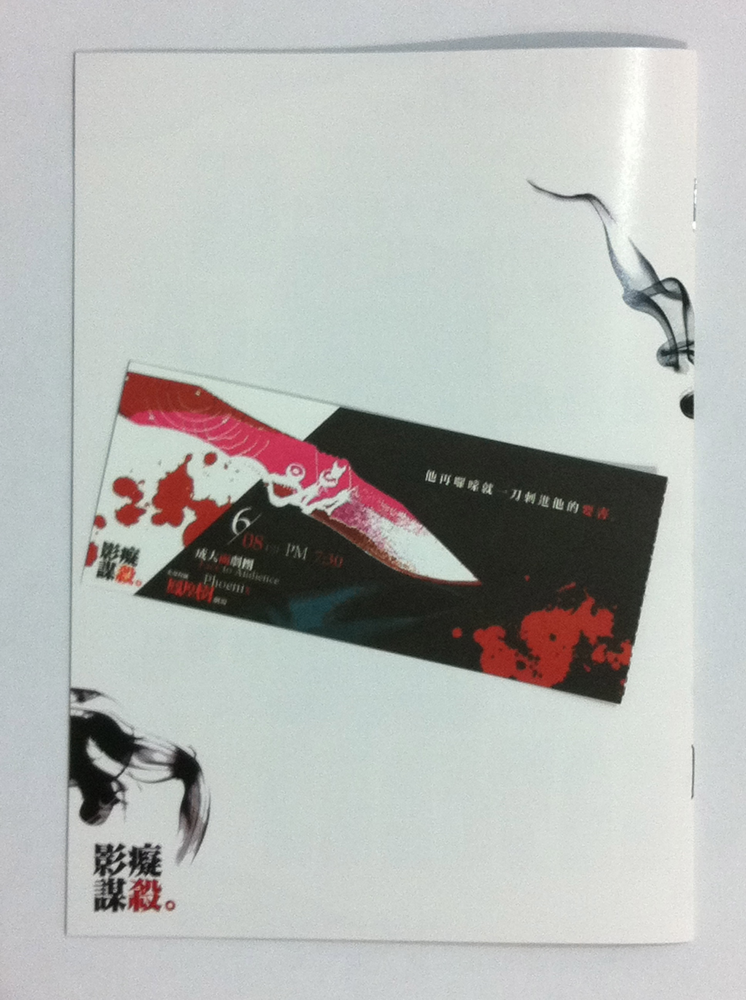

嘿，我並不是要說紀蔚然老師寫的那本影痴謀殺，不過，關係倒也很深。
前兩天收到成大藝術中心寄的信，說有個「面劇團」的首演….「影痴謀殺」？我沒聽過面劇團，也沒聽過影痴謀殺，只是不小心被那簡介給吸引住了，或許也帶有一點點嘗鮮的心情吧。
在我的記憶所及，我好像沒看過幾場話劇舞台劇。首先想到的是學校各系或是校友會辦的xx之夜，再來，印象中….呃，其實沒印象了，好像有次被強迫欣賞某個很有名的劇團演出的話劇舞台劇？總之那都不重要了，我只是想說：
我並不懂話劇舞台劇。
嗯，也許我該從下午講起了….其實我是當天下午才確定我晚上會去看這場表演的。首演耶！面劇團不曉得是哪裡來的新成立的劇團….以前我只聽過台南人劇團，那是從修通識表演藝術概論的同學口中聽到的，我還真是個鄉巴佬XD 晚上到了鳳凰樹劇場才知道，他˙們˙竟˙然˙全˙都˙是˙成˙大˙學˙生！！！！嚇死我了實在…….呃，雖然在場外有些意外的小插曲，我沒有票可以進去…..但是強運如我，在候補到票之後，竟然還是找了個第四排，中間偏右的位置坐了下來。欸不是我在說，這位置很棒耶！附近幾乎都坐滿了說，這就叫座無虛席嗎？我在入場前對藝術中心的怨念都消一半了….
這場表演的劇本，其實就是開頭提到的那本影痴謀殺，我沒有看過內容，不曉得他是小說或是本來就是劇本形式。但我有找到別的劇團也以此作為演出劇本。故事發生在2005年的台北，六名白人男性慘遭連續殺害，而「神探」負責偵查此案件。所有死者在生前都經常出入一家外國人聚集的pub，Coco、Vincent、吳思華這三名嫌犯，對上「神探」與小張兩位警察，還有小萍這位…..翻譯？XD 好啦事實上小萍也是警察吧。在影痴謀殺的一些網路上的心得有提到，紀蔚然老師在這個故事中，並不玩弄兇手犯案所使用的手法，而是要更實際的，去深刻探討兇手內心的動機。嗯，很棒的故事。噢對了，這段所講的東西其實都是我在回家之後才從網路上還有現場發的小冊子(那有專門的名字嗎)上面所了解到的。
「我現在就要幹你。」(被揍)
小冊子的封面上，印著精緻卻又富有張力的標題。什麼樣的劇情，會出現這樣聳動的標題？很意外的沒有太多意外，這是一個很明顯的性暗示。………很明顯的性暗示是什麼鬼阿！(又被揍)
入場後的等待時間，我看著冊子封面、還有舞台上的投影幕發呆。(其實還偷偷上了一下噗浪。) 美中不足的是，投影幕上所放映的人物介紹，太過粗糙了。一直到整場演出結束，我還是認為那是唯一的缺憾。但，話劇舞台劇的重點並不在於前面的簡報做得好不好，連鄉巴佬都這樣認為了，我相信其他觀眾應該不會在意這種小事的。
抱著一種陌生與期待，我看著燈光暗下。
在演出過程中，我就已經融入他們了。噢不，我想應該是被強行吸入那個活生生的情境去了。不時可以聽到笑聲，還有間或出現的掌聲與小小的歡呼，整個鳳凰樹劇場都是他們的舞台了。角色的對話相當自然，其中埋伏著出其不意的笑點，跟搞笑劇又不一樣，那是真真實實能夠出現在生活中的趣味，當然是對旁觀者而言啦。我好喜歡那些對話，還有那些互動！不過，有時候我會偷偷觀察單面鏡另一邊的演員們，有時會發現他們也看戲看得入迷了XD 對了，這單面鏡不只是一個道具，我想它具有很大的象徵意義 - 警察局。開場時的那段簡短對白，引入警局這個場景，並且用單面鏡作為場景象徵，這一點細膩，對於觀眾的感受而言(學資訊的我們會叫他User Experience)有很大的影響！從這小地方就可以看出面劇團的團隊絕對有一定的水準 :D
事實上，每段場景都有或多或少的細節讓我佩服，也許真是我眼光短淺吧。不過我還想提到，那個三場景切割畫面的偵訊，看得出位置經過精心的安排，倒數第二次的亮燈，我心裡想的是：為什麼要加入這僅僅1秒鐘的畫面？我想是為了引導目光吧，觀眾的眼睛慢慢的被吸過去了:P 最後再挑一個我相當激賞的部份來碎碎念一下好了。在整個演出過程中，其實出現了很多突發狀況，呃，但是其實我沒辦法分辨哪些是突發狀況了！該說是他們太巧妙的製造了一些假的意外呢，或是他們精湛的演技把意外變成了劇本呢？記憶最深刻的是撿板擦的那個橋段，「板擦撿起來吧，都掉了」，他加詞耶！加詞耶！XDDDDDD (欸，你們不是故意弄掉的對吧…..對吧？)
我必須說，這場演出真的太精采，太精采了！在小張發飆的時候，我的心跟著揪了起來，也感到有些害怕。別說神探跟小萍了，就連我也覺得小張真的發飆了…..也是在這之後，我才不小心發覺，我早就被這六個人緊緊扣住……這六個角色，真不曉得是怎麼選角的，怎麼會如此渾然天成？神探，有些老氣，有些江湖味，顯示出他在警界的經驗，但又有種頑童的氣質，為他所有的爆笑言行做了很貼切的引子。小張，傻傻的新人，看起來很上進，又帶有喜感，跟神探對戲簡直是情投意合(啥)。Coco，一個婊子，呃不是，我是說，一個相當自主且叛逆的女人，抽著菸，還有那富有殺氣的對白，他從打扮到內在彷彿真的成為了一個…..＊＊。Vincent，稍微可惜了些，角色形象不夠鮮明，我認為外在的娘娘腔不是同性戀的主要特色，如果從內心把自己當成同性戀(而且是比較豪邁的那種)，也許會更加傳神:p。吳思華，一個安安靜靜的變態，本來以為會是智慧型犯罪的殺手，結果最後變成諧星了XD，我想這角色的形象並不如Coco那樣鮮明且外放，但仍然揣摩得很好！最後是小萍，我絕對不是因為小萍很可愛才最後提到的，我是根據出場順序。小萍在戲裡的獨白很多，我好喜歡這部份！小萍的獨白像是真的在說自己的心事一樣，動作、表情、語氣都是自己的，不小心就會忘記他其實是在舞台上勒！再來是戲的部份，這個角色本身的味道我也非常喜歡，那種堅持，一定要看資料的堅持，那種努力，要看完資料的努力，那種狂熱，對電影的狂熱，那種智慧，那種喜感，那種天真。對了，總覺得小萍才是真正的主角，雖然他在快到中期才出現，但是在那之前的橋段像是一段鋪陳的主歌，經過小萍獨白這段bridge後，開始進入副歌，也緊扣著整段故事。在這六個角色中，我想我最欣賞的應該是小張跟小萍吧，然而Coco也是讓我相當佩服的對象！
欸，其實好像還有很多感覺一時之間說不出來~
我不會忘記，謝幕的時候，我用最大的力氣，不顧右手受傷，很努力的不停鼓掌！真的，如果你看到這篇文章，我希望你也可以感受到我當時的感動！當時我唯一能夠做的就是給台上的每一位最大的掌聲。甚至，我感覺到他們的眼淚也即將決堤，或許在閉幕後的他們，也哭成了一團:p
嘿，整個鳳凰樹劇場都是你們的舞台啊！這個舞台裡面已經最少有一個人跟你們一起感動得熱淚盈眶了啊！走出鳳凰樹，我是帶著快樂、興奮、滿足、呃….我不知道該怎麼好好形容….總之是個超棒的心情離開的！
雖然現在在寫這篇文章的是個不懂話劇舞台劇的阿宅 ，但是相信我，他們真的很棒！如果你也去欣賞他們，一定也會跟我一樣帶著笑容離開！
碎碎念們：
- 有篇找到的….算是新聞：成大「面劇團」成軍首演「影癡謀殺」
- 噢我才剛離開就馬上發噗說「面劇團讚！」可是都沒人理我XD
- 我說我要給他們100分! 結果得到的回應是「天啊….以你的標準…..這真的是最高評價耶！」XDDDD
- 剛剛偷偷查了一下 小張、小萍還有Coco這三位演員，小張比較難找，不過先找到小萍之後就找到小張了XD 不過Coco就找不到了XD
- 噢噢~找到另外一篇新聞耶！(咦？裡面提到台灣戲劇表演家可是沒提到台南人劇團…..?)
- 看了他們的演出之後其實很後悔之前沒有去修表演藝術概論啊…..QQ 我回不去了…
- 回家之後把門票還有小冊子拍了一下
 - 碎碎念好多，還有想到的話之後再補吧~哈！
ps. 感謝楊三毛的指正，本文的「話劇」全部改成「舞台劇」了，真是不好意思。<(_ _)>
Last modified on 2011-06-09